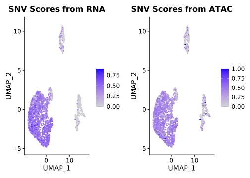

This page addresses the following observations:
lostCells %>%
`colnames<-`(c("sample", "with ATAC filtering", "no ATAC filtering")) %>%
pivot_longer(cols = -sample, names_to = "filtering", values_to = "numberCells") %>%
ggplot(aes(x = sample, y = numberCells, fill = filtering)) +
geom_bar(position = "dodge", stat = "identity") +
theme_bw() +
theme(axis.text.x = element_text(angle = 90, vjust = 0.5, hjust=1)) +
scale_colour_nejm() +
labs(x = "Sample", y = "Number of Cells Kept", fill = "Filtering Strategy")For cells with both high-quality RNA and ATAC:
rna_atac_snvCalls <- rna_atac_snvCalls %>%
`colnames<-`(c("sample", "numSNVs", "RNA", "ATAC")) %>%
pivot_longer(cols = -c(sample, numSNVs), names_to = "Modality", values_to = "Proportion")
rna_atac_snvCalls %>%
ggplot(aes(x = reorder(sample, numSNVs), y = Proportion, fill = log10(numSNVs), colour = Modality)) +
geom_bar(position = "dodge", stat = "identity") +
geom_text(data = dplyr::filter(rna_atac_snvCalls, Modality == "ATAC"),
aes(label = numSNVs), angle = 90, colour = "black", nudge_y = 0.1, size = 3.5) +
ylim(c(0, 1)) +
theme_bw() +
theme(axis.text.x = element_text(angle = 90, vjust = 0.5, hjust=1)) +
scale_colour_nejm() +
labs(x = "Sample", y = "Proportion of SNVs Detected", fill = "Log10(Number\nof SNVs)")The proportion of SNVs detected from scRNA-seq is lower than the proportion detected from scATAC-seq. However, there is no direct relationship between the number of SNVs and the proportion of them that are detected.
snvCalls_perCell %>%
ggplot(aes(x = log(numSNVs + 0.001), fill = cellType)) +
geom_density(alpha = 0.4) +
facet_grid(rows = vars(sample), cols = vars(Modality), scales = "free_x") +
theme_bw() +
labs(x = "Log10(Number of SNVs + 0.001)", fill = "Cell Type") +
scale_fill_nejm()Except for POG1329 and POG785_1, SNVs detected from RNA can distinguish between malignant and non-malignant cells
Cell Ranger ATAC filters cells based on the proportion of fragments that overlap peaks.
totalCounts %>%
ggplot(aes(x = withATAC, y = Value)) +
geom_violin() +
facet_wrap(~Type) +
theme_bw() +
labs(x = "Cell Ranger ATAC status", y = "Number per Cell")wATAC_seu <- readRDS(paste0(path, "POG003_2/separate_ProcessedSeurat.RDS"))
rnaOnly_seu <- readRDS(paste0(path, "POG003_2/rna_ProcessedSeurat.RDS"))
rnaOnly_seu$atacStatus <- ifelse(colnames(rnaOnly_seu) %in% convert_atac_indices(cellBarcodes$barcodes), "Kept", "Discarded")
DimPlot(rnaOnly_seu, group.by = "atacStatus", reduction = "rna.umap") +
ggtitle(NULL)Cells discarded due to poor-quality ATAC-seq do not form RNA-driven clusters separate from cells that were kept.
p1 <- FeaturePlot(rnaOnly_seu, features = "snvScore", reduction = "rna.umap") +
ggtitle("SNV Scores from RNA")
p2 <- FeaturePlot(rnaOnly_seu, features = "snvScore_atac", reduction = "rna.umap") +
ggtitle("SNV Scores from ATAC")
plot_grid(p1, p2)